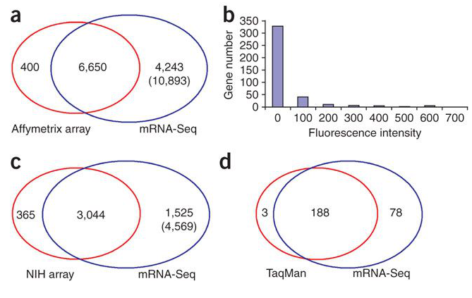

CvilleBioHub and UVA BDS
Nikki Hastings, Greg Medlock, Catherine Robertson, Sarah Goggin, Christopher Dampier
June 19, 2019
Mission
To advance the Charlottesville-area biotechnology industry through connection, collaboration, and elevation
Current updates
CvilleBioHub Strategic Plan is in review
Conducting Impact Study to collect data from our region (in progress )
Developing partnerships and collaborations
Hosting/co-hosting monthly professional development events
Aiming for sustainability through partnership, sponsorship, grants, conferences
Future objectives
To develop programs to directly impact the needs of the CvilleBioHub network.
To assess and develop a plan for a Charlottesville-based incubator facility, to include wet-lab capabilities.
To develop and grow a pipeline of talent and entities to sustain a vibrant and innovative biotechnology ecosystem.
Biomedical Data Sciences Training Grant
bme.virginia.edu/bds/ Established 2016
NIH-funded predoctoral training grant
Focused on biomedical big data manipulation, analysis & interpretation
Grant PI
Jason Papin, PhD, UVA Biomedical Engineering
Departments
Biomedical Engineering
Systems Engineering
Computer Science
Biochemistry & Molecular Genetics
Research
Computational epigenetics
Gut microbiome metabolism
Natural language processing for mental health
Deep learning for genomics
Inaugural trainees now graduating and ready to be recruited
Key training activities
Courses in machine learning, statistics, quantitative biology
Collaborative research experiences and co-mentorship
Hackathons, open participation for 2019, 20 hackers
Hackathon organizers
Nathan Sheffield, PhD, PHS/BME
Hackathon organizers
Jeff Xing, BME
Hackathon organizers
Kim Fitzhugh-Higgins, BME
Basics of biomedical science
For an individual organism, there are many tissues and cells
Same DNA, different characteristics and functions
What determines the function and behavior of a cell?
Basics of "omics" technologies
NGS
Next-Generation sequencing (NGS) is a tool to study molecular features of cells
Traditionally performed on genetic material pooled from large groups of cells ("bulk" sequencing)
Basics of "omics" technologies
NGS generates LARGE datasets
An expansive open source community develops tools for analyzing these data
Motivation
Bulk omics assays show averages of groups
Miss important cell-to-cell heterogeneity
Early single-cell expression
Original single-cell RNA-seq
RNA-seq vs array
RNA-seq wins
Contemporary methods
Hwang, et al., 2018 review single-cell RNA-seq methodsIsolation: dilution, micromanipulation, FACS, LCM, microfluidics, CellSearch
Library prep: Smart-seq , MARS-seq , CEL-seq , Drop-seq
Methylation profile
Smallwood
Chromatin accessibility profile
Buenrostro
Histone modification profile
Rotem
Preprocessing
Typical stuff (FastQC, STAR, featureCounts, kallisto/Salmon) PLUS
Recover cell of origin with cell barcode sort
Deduplicate transcripts with UMI filter
Hackathon 2019
Goal: To develop a convenient, free and open-source software tool to solve one of the many remaining bioinformatics challenges of single-cell molecular phenotyping
Process
Choose a dataset
Distribute tasks
Collaborate on GitHub
ScanPy anndata